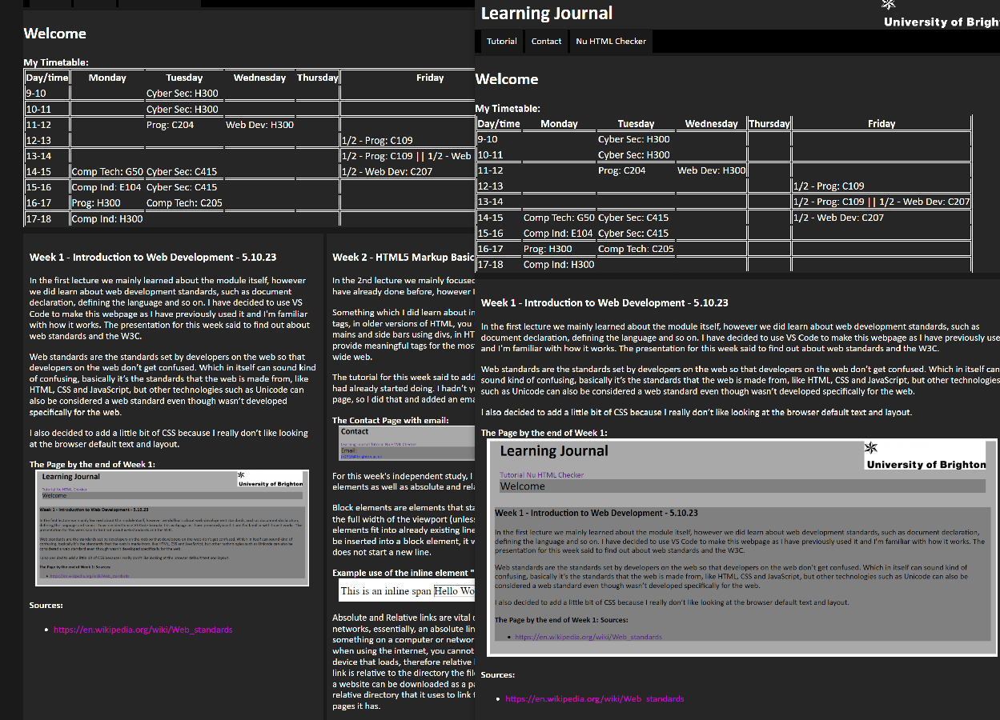

Week 1 - Introduction to Web Development - 5.10.23
In the first lecture we mainly learned about the module itself, however we did learn about web development standards, such as document declaration, defining the language and so on. I have decided to use VS Code to make this webpage as I have previously used it and I'm familiar with how it works. The presentation for this week said to find out about web standards and the W3C.
Web standards are the standards set by developers on the web so that developers on the web don’t get confused. Which in itself can sound kind of confusing, basically it’s the standards that the web is made from, like HTML, CSS and JavaScript, but other technologies such as Unicode can also be considered a web standard even though wasn’t developed specifically for the web.
I also decided to add a little bit of CSS because I really don’t like looking at the browser default text and layout.
In the 2nd lecture we mainly focused on basic HTML markup, which I have already done before, however I did pay attention as I am a bit rusty.
Something which I did learn about in this lecture was the use of semantic tags, in older versions of HTML, you used to create things like headers, mains and side bars using divs, in HTML 5 semantics were introduced to provide meaningful tags for the most used elements across the world wide web.
The tutorial for this week said to add lists, navigation and images. Which I had already started doing. I hadn’t yet set up navigation to the contact page, so I did that and added an email link.
The Contact Page with email:
For this week's independent study, I researched block and inline elements as well as absolute and relative links.
Block elements are elements that start a new line, they will always use up the full width of the viewport (unless CSS is applied). Whereas Inline elements fit into already existing lines, for example the span element can be inserted into a block element, it will only take up necessary space and does not start a new line.
Example use of the inline element "span:"
Absolute and Relative links are vital concepts for modern computers and networks, essentially, an absolute link defines the absolute location of something on a computer or network from the root directory, however when using the internet, you cannot know the full directory of anyone device that loads, therefore relative links must be used, this is where the link is relative to the directory the file is in. This means that, for example, a website can be downloaded as a package, that website then has its own relative directory that it uses to link to all the necessary files and other pages it has.
This week in the lecture we learned about the Document Object Model (DOM), basically using the model, it treats an HTML file as a tree structure, in which its elements are the branches.
We also learnt about hypertext, basically hypertext is text that navigates from one chunk of content to another through links. This is where the HT is HTML comes from. This has revolutionized how we as human's intake information, as we can now just click a link to learn more about a topic. These links are known as anchors.
This week I encountered a problem while testing the page on mobile. Images don’t scale correctly, I spend time searching for various solutions, like changing max height, object-fit and so on.
In the end it turned out that I had forgotten to clear the cache on my mobile browser, which would have been quite funny if I hadn’t wasted 20 minutes of my time.
After this minor inconvenience, I moved onto adding content to the page, this being a table, and I also added some image links for HTML and CSS which can be found next.
HTML and CSS Image Links:
After a sufficient amount of time recreating my time table in HTML, I took a screenshot of it and was finished for this week.
The lecture this week was on Cascading Stylesheet (CSS), having done GCSE and A-Level Computer Science I have had previous experience using CSS, meaning this week I already knew some of what was mentioned; however, I did take the opportunity to do a sanity check that I actually knew some CSS.
CSS has inheritance, meaning that if an element has style assigned in a stylesheet, this style will be inherited into common components of its child elements, for example setting the font of the body, will change the font on the entire page.
As I had already styled some aspects of the page I decided to spend time this week altering the style of the page, basically making it dark mode, I also created a proper Menu with button that change colour when hovered over.
I changed the text to be white as the background was now dark, i also brightened the colour of links on the page, as i noticed they were difficult to see.
This week we continued on CSS, quickly moving into concepts that I hadn’t actually heard of before, such as the standard box model, and testing using block colours. Basically a box in HTML actually has 4 perimeter edges. The Content Edge, the Padding Edge, the Border edge and the Margin edge. These can all be adjusted to display content how the developer wants it to be displayed. For example, if a thin border is wanted, then the border width property can be changed using CSS.
We also learnt about what measurements CSS uses. As humans in the real world, we use absolute measurements, e.g- meters. However CSS usually uses relative measurements, such as %, rem and vw (viewport height). The reason for using relative measurements is that computer screens can be variable in size, e.g- different resolutions, mobile vs desktop. This necessitates relative measurements.
The viewport is the region in which a webpage in a browser is rendered (In the context of a webbrowser), this will usually not be the same as the full screen size.
In this lecture we learnt about responsive web design, or RWD. RWD is about 3 core principles:
Fluid Layout: Use relative measurements
CSS Media Queries: Detect media, e.g- viewport size and style elements accordingly
Responsive Media: Flexible images for different screen sizes, flexible media containers
CSS Media queries inspect the device that the media is being displayed on in order to better display said media. For example, viewport size, screen orientation.
Media Queries can be used in an almost infinite number of scenarios, for example a media queries can be used to assign what grid layout a page should use, depending on the size of the viewport that is available.
This week I added a grid, I originally intended to do a 3-column grid as shown in the tutorial, however I decided to do 2 columns that my blog posts would fill, this is so that the images in the posts do not become so small they are too small to properly observe.

Week 7 - Responsive Web Development 2 - 16.11.23
This week we continued on RWD, the focus of this lecture was on responsive media however. Basically the idea that media in a webpage should be responsive to the circumstances in which it is being viewed, like images changing size when the orientation of a phone is flipped.
Images on the web must be optimized to account for the range of situations in which the page could be viewed, a fast connection may not always be available. During the development of the page I am using PNGs but near the end I will compress all the images to a suitable level so that the page is optimized.
We also learnt about embedded video, there are 2 ways to embed video in HTML:
Self Hosting - Host the video on the server and use the video tag
Host from an external site (Such as YouTube) and embed it into your webpage


{kind=link}